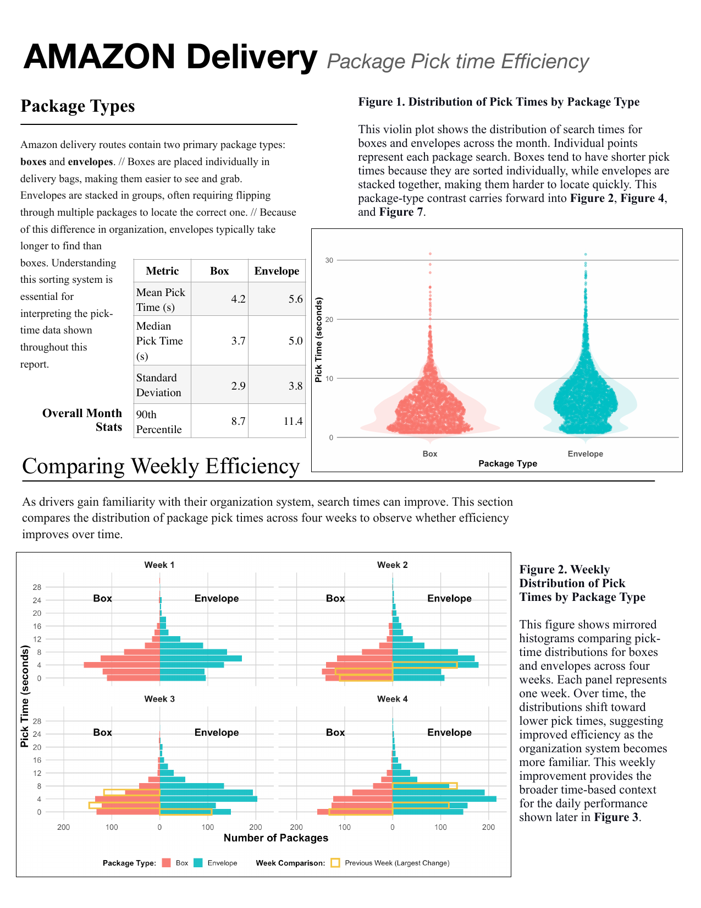
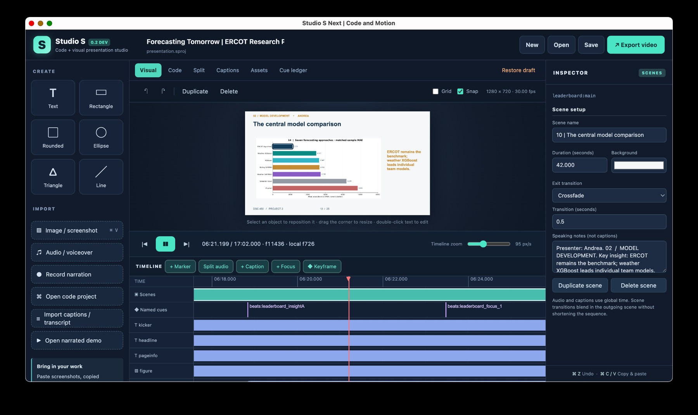

Bellevue University · DSC 450 · Fall CapstoneMilestone presented
Predicting Economic Damage from Severe Weather
Using storm data to study recorded damage.
View the project ↗WHY THE WORK MATTERS
DATA SCIENCE · CURIOSITY · COMMUNITY
I am a neuroscientist-turned data scientist, captivated by modern technology and driven by a passion for helping people and improving systems. My dream is to use data science to improve civic life and empower communities.
NOTE 01 · THE WORK IN CONTEXT
Combining varied work experience, practical data science skills, and innate creativity. These three lanes are different on the surface, but they all come from the same habit: turning questions into something clear, useful, and real.

SCHOOL
Models, datasets, and visual explanations built through university coursework, including the Bellevue University DSC 450 Fall Capstone.

WORK
Educational media, animation, and interactive learning work shaped by real users, healthcare context, and collaboration.

PERSONAL
Independent software and creative tools that turn ideas into working systems, from presentation software to printable publishing tools.
COLLECTION 01 / BELLEVUE UNIVERSITY
Capstone research, predictive modeling, and visual questions drawn from firsthand work experience. The three DSC 450 projects are part of Bellevue University’s Fall Capstone course.
Using storm data to study recorded damage.
View the project ↗WHY THE WORK MATTERS
THE THREAD THAT CONNECTS THE WORK